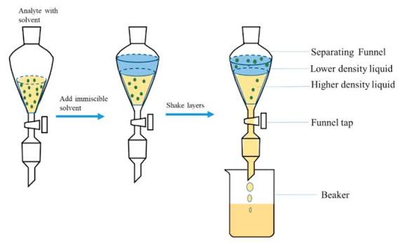

Chiết lỏng – lỏng

Image source: Topic 2 image sources
| Vietnamese | Chiết lỏng – lỏng |
|---|---|
| English | Liquid-liquid extraction |
| Pronunciation | /ˈlɪkwɪd ˈlɪkwɪd ɪkˈstrækʃən/ |
| Word type | Noun phrase |
Meaning (Vietnamese)
Phương pháp chuyển chất tan giữa hai chất lỏng không trộn lẫn dựa vào độ tan của chất đó.
Meaning (English)
A method of transferring a substance between two immiscible liquids according to its solubility.
Example
Liquid-liquid extraction separates an organic compound from water.
Source of information: Topic 2 notes (see Sources)